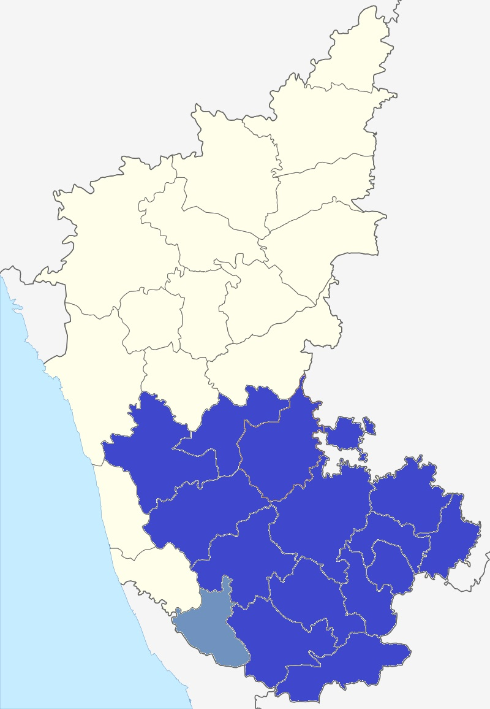
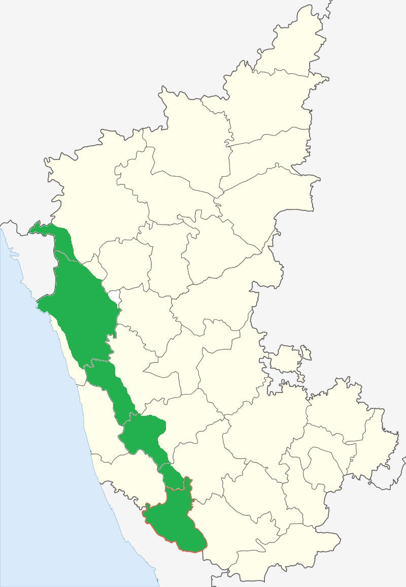
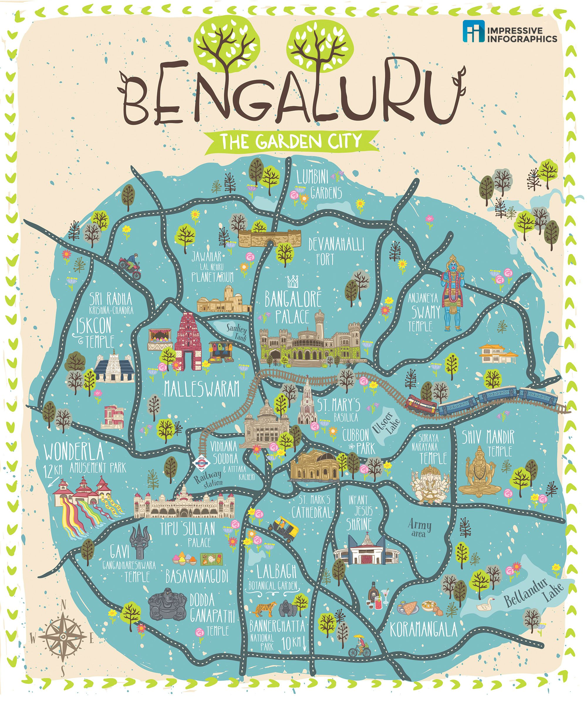
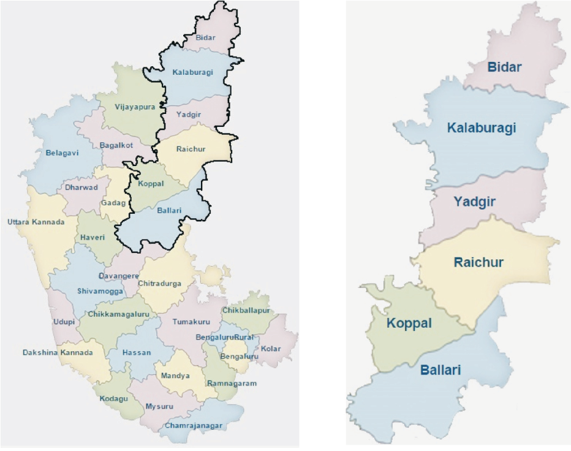

Karnataka Map
Political map of Karnataka showing districts, major cities, and geographical boundaries
About Karnataka
Karnataka, located in the southwestern region of India, covers an area of 191,791 square kilometers and is the sixth largest state in India by area. It shares borders with Goa, Maharashtra, Telangana, Andhra Pradesh, Tamil Nadu, and Kerala, and has a vast coastline of 320 km along the Arabian Sea. The state capital, Bengaluru (Bangalore), is the hub of India's technology revolution and is often called the Silicon Valley of India.
Karnataka’s geography ranges from the misty Western Ghats and the lush Malnad region to the dry plains of the Bayaluseeme. It is the birthplace of major rivers such as the Cauvery, Krishna, Tungabhadra, and Sharavathi. Jog Falls, one of the tallest waterfalls in India, cascades from the Sharavathi River in Shivamogga district.
The state is home to 31 districts divided into four administrative divisions — Bengaluru, Mysuru, Belagavi, and Kalaburagi. Kannada is the official language, and the state celebrates its formation every year on November 1 as Kannada Rajyotsava. The people of Karnataka are known for their warmth, hospitality, and pride in their linguistic and cultural identity.
A Journey Through History
Karnataka’s history stretches back over 2,000 years. The region was ruled by powerful dynasties that left an indelible mark on art, architecture, language, and governance. Early dynasties such as the Kadambas of Banavasi and the Gangas of Talakad laid the foundation of Kannada culture and administration.
- Chalukyas of Badami (6th–8th century) – Built iconic temples at Aihole and Pattadakal (UNESCO World Heritage Site).
- Rashtrakutas of Malkhed (8th–10th century) – Known for the rock-cut Kailasa Temple at Ellora and literary patronage.
- Hoysalas of Belur and Halebidu (11th–14th century) – Created intricate soapstone temples, masterpieces of Dravidian architecture.
- Vijayanagara Empire (14th–16th century) – With Hampi as its capital, it became one of South Asia’s greatest empires, celebrated for art, music, and prosperity.
- Kingdom of Mysore (16th–20th century) – Under the Wodeyars and Tipu Sultan, Mysore emerged as a center for education, music, and governance.
After Indian independence, the unification of Kannada-speaking regions in 1956 led to the formation of the modern state of Karnataka — a historic event symbolizing linguistic pride and cultural unity.
Culture and Traditions
Karnataka’s culture is a vibrant mosaic shaped by literature, dance, theatre, crafts, and festivals. Kannada literature dates back to the 9th century with the poet Pampa, and flourished through the ages with writers like Kuvempu, U. R. Ananthamurthy, and Shivarama Karanth. The state has produced 8 Jnanpith awardees — the highest among Indian states.
Performing arts like Yakshagana (a colorful dance-drama from coastal Karnataka), Dollu Kunitha (a drum dance), Kamsale, and Veeragase are integral to local culture. The Mysore painting tradition, noted for its gold leaf work, and Channapatna toys represent the artistic craftsmanship of the people.
Karnataka’s festivals — Mysore Dasara, Kambala (buffalo race), Karaga in Bengaluru, and Hampi Utsav — showcase a blend of devotion, color, and community. Rajyotsava Day, celebrated on November 1, unites Kannadigas around the world in pride and joy.
Cuisine of Karnataka
Karnataka’s cuisine reflects its diversity — from the spicy seafood of the coast to the wholesome millet-based meals of the north. Udupi cuisine is world-famous for its vegetarian delicacies like dosa, idli, and sambar. Coastal dishes such as Neer Dosa, Kori Rotti, and Fish Gassi are rich in coconut flavors. The northern regions favor Jolada Rotti (sorghum flatbread), Ennegai (stuffed eggplant), and Yennegai Palya.
Famous sweets include Mysore Pak, Dharwad Peda, Holige, and Ragi Halwa. Coffee from Coorg and Chikmagalur is globally renowned, making Karnataka the largest coffee-producing state in India.
Nature, Wildlife & Tourism
Karnataka is blessed with natural beauty — misty hills, dense forests, serene beaches, and cascading waterfalls. The Western Ghats, a UNESCO World Heritage site, run through the state and harbor rich biodiversity. National parks like Bandipur, Nagarhole, Kudremukh, and Bannerghatta are home to elephants, tigers, and hundreds of bird species.
Popular tourist destinations include:
- Hampi – The ruins of the Vijayanagara Empire, a UNESCO site of temples and stone carvings.
- Coorg (Kodagu) – Known for coffee estates, waterfalls, and hill retreats.
- Mysuru – Famous for its royal palace, silk sarees, and the grand Dasara festival.
- Chikmagalur – Scenic hill station and coffee heartland.
- Gokarna – Serene beaches and temples along the Arabian Sea.
- Badami, Aihole, Pattadakal – Historic temple towns that trace early Chalukyan art.
Karnataka’s eco-tourism initiatives, heritage walks, and local homestays make it a traveler’s paradise for nature lovers, adventure seekers, and history enthusiasts alike.
Famous Personalities from Karnataka
Sir M. Visvesvaraya
Civil engineer, statesman, and Bharat Ratna awardee, known for modern irrigation and industrial planning.
Kuvempu
Jnanpith-winning poet, author of "Ramayana Darshanam" and advocate of 'Vishwamanava' philosophy.

Dr. Rajkumar
Legendary Kannada film actor, cultural icon, and National Award recipient.
Tipu Sultan
18th-century ruler of Mysore, known for valor and resistance against British colonization.

Pandit Bhimsen Joshi
Legendary Hindustani vocalist and Bharat Ratna laureate.
Dr. Sudha Murty
Philanthropist, author, and chairperson of Infosys Foundation known for social work and education initiatives.
Explore Karnataka by Region
Coastal Karnataka
Karavali - The Pearl of the Arabian Sea with beaches, temples, and Yakshagana traditions.
South Karnataka
Mysuru region with royal heritage, Dasara celebrations, and Mysore Palace grandeur.
Central Karnataka
Malnad region with coffee estates, Western Ghats, and nature's abundant beauty.
Southeast Karnataka
Bengaluru region - Tech capital with modern culture and traditional heritage blend.
Northeast Karnataka
Kalyana Karnataka with Hampi ruins, ancient temples, and rich historical legacy.

North Karnataka
North Karnataka with Badami caves, Gol Gumbaz, and ancient architectural marvels.
Click on any region to explore its unique culture, cuisine, and traditions
ಪ್ರತಿ ಪ್ರದೇಶದ ವಿಶಿಷ್ಟ ಸಂಸ್ಕೃತಿ, ಪಾಕಪದ್ಧತಿ ಮತ್ತು ಸಂಪ್ರದಾಯಗಳನ್ನು ಅನ್ವೇಷಿಸಲು ಯಾವುದೇ ಪ್ರದೇಶದ ಮೇಲೆ ಕ್ಲಿಕ್ ಮಾಡಿ
Tismo Firmware Team 2025
Tismo Second Floor Team
Celebrating Karnataka's Rich Heritage Together
ಕರ್ನಾಟಕದ ಶ್ರೀಮಂತ ಪರಂಪರೆಯನ್ನು ಒಟ್ಟಾಗಿ ಆಚರಿಸುತ್ತೇವೆ